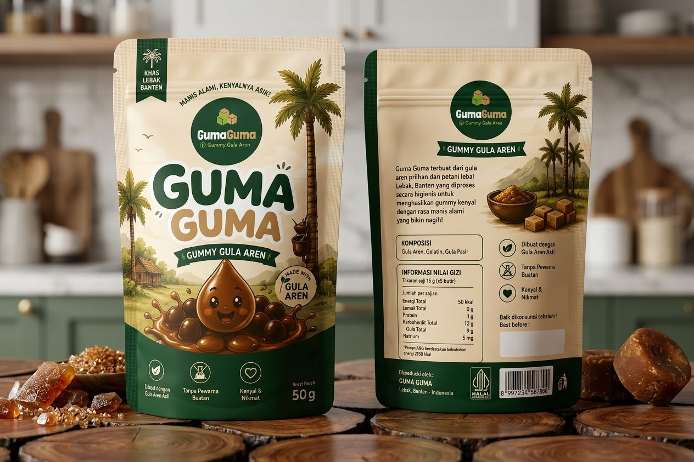

PRODUK UTAMA
Gummy Gula Aren
Rasakan kelezatan otentik tanah Pasundan lewat Baduy Palm Sugar Gummy, permen jeli kenyal berenergi yang dibuat dari ekstrak gula aren murni khas Suku Baduy. Diproses secara alami untuk mempertahankan cita rasa karamel gurih yang khas, camilan ini siap memberikan dorongan energi instan yang pas di tengah padatnya hari.
Sangat praktis dan mudah dibawa ke mana saja, permen ini adalah teman setia untuk menjaga fokus dan stamina saat bekerja, belajar, maupun berolahraga.
- Bahan Utama: Gula aren asli pilihan khas Suku Baduy (alami & tanpa pemanis buatan)
- Keunggulan: Sumber energi instan yang lezat dan praktis
- Tekstur & Rasa: Kenyal pas dengan paduan manis-gurih yang autentik
- Cocok Untuk: Pekerja aktif, mahasiswa, penggiat outdoor, serta pecinta camilan alami
01Rasa lokal
02Konsep modern
03Berbasis cerita daerah